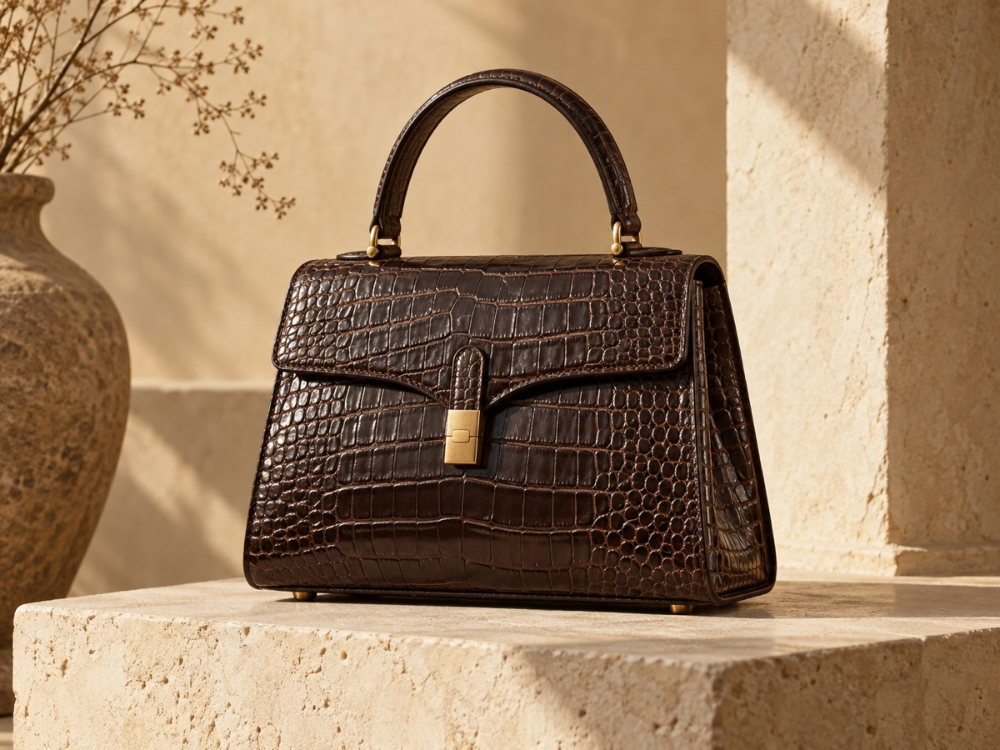
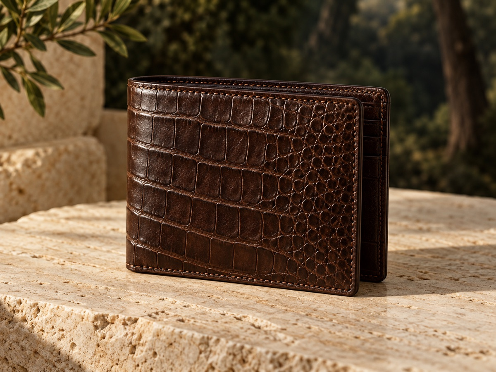
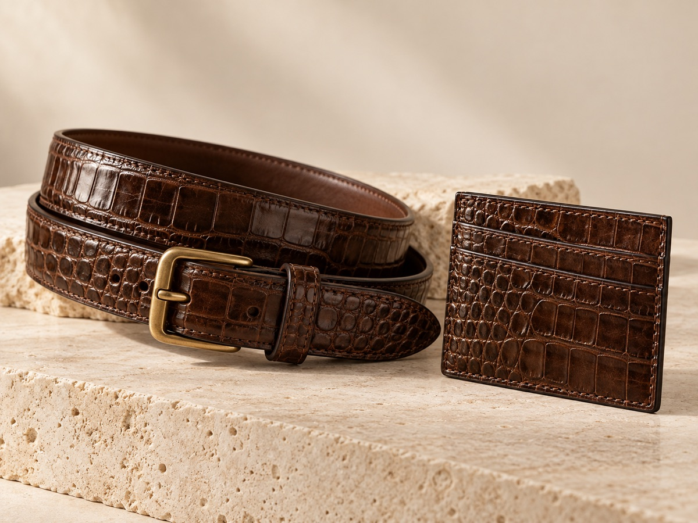

Những món đồ mang dấu vân riêng.
Khám phá túi, ví và phụ kiện được tuyển chọn theo công năng, phom dáng và chất liệu.

02 / Ví da
Ví da
Thiết kế gọn gàng, chú trọng cảm giác cầm nắm và từng chi tiết hoàn thiện.
Khám phá thiết kế →

Hình ảnh trong bản thiết kế là hình minh họa phong cách, vui lòng liên hệ Việt Thành để xác nhận mẫu và tình trạng sản phẩm hiện có.